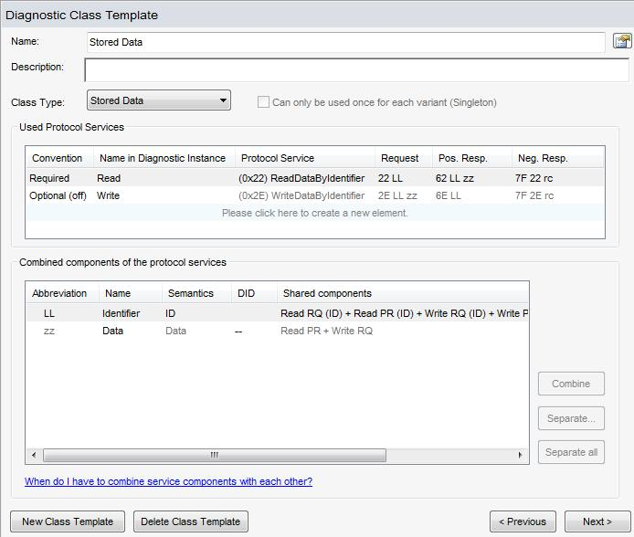

to the right of the "Name" edit field lets you open the Property Dialog.
to the right of the "Name" edit field lets you open the Property Dialog.
View for Diagnostic Class Template
This dialog is only available in the Expert View.
See also the Diagnostic Class Template Feature.
See names in CANdela.
Note: you can edit the qualifier in the associated property dialog (see next chapter).
The Properties button to the right of the "Name" edit field lets you open the Property Dialog.
It is also available in the context menu of the tree node.
See descriptions in CANdela.
To edit a larger description, use the property dialog (see previous chapter).
Shows the class type.
See the Property Page "Specification".
The list of Used Protocol Services contains
For details, see the Used Protocol Service Feature.
Using the context menu, you can open the property dialog for a Used Protocol Service.
[DCTUI-R400] You can add further Protocol Services...
This opens the dialog "New Used Protocol Service":
[DCTUI-R410] You can remove one or multiple Used Protocol Services...
After confirmation, CANdelaStudio...
See also the Combined Components Feature.
Each list element represents one combined component.
Since negative responses are never combined, there is no need to display them in the list.
Abbreviations "sr", "sd", "er" and "ed" represent Proxy Components with special Fault Memory semantics, see [PC-R100].
For a new diagnostic class template, initially the set of all components in the list is taken from all Protocol Services which are used in the diagnostic class: from each Protocol Service's request and positive response ("RQ" or "PR"), the list contains...
The sort order of the list elements is fix, it is derived from
It is the same order as for the property pages in the diagnostic instance dialog.
Each list element is visualized like "Read PR (LID) + Write RQ (LID)", i.e. the visualizations of the individual components are concatenated by " + ".
An individual component is visualized by...
Example: "Write RQ (LID)".
The "semantics" column represents the semantics of the component.
The "DID" column represents the Combined Component DID Semantics [DID-R050].
There are some restrictions on the possible combinations of components:
To combine some components,
If the selection contains components that cannot be combined, a message is displayed.
Add two Protocol Services from UDS as "Used Protocol Services" in a diagnostic class template:
Both Protocol Services have a proxy component named "Data":
When you combine both proxy components, you'll have only one telegram table in the diagnostic instances for this Diagnostic Class Template.
The opposite may be achieved by either
taking one component out of a share (select the component in a popup dialog) (button "Separate"; for single selection only; only for lines containing more than one component), or by
separating all, i.e. each combined component will afterwards have a line of its own (button "Separate all"; for single selection only; only for lines containing more than one component)
The dialog contains a list of the combined components participating (same representation of each component as in the components list). You must select exactly one.
Diagnostic class templates may be reordered by commands “Edit | Move Up” and “Edit | Move Down” of the main menu.
CANdelaStudio also reorders existing diagnostic classes and diagnostic instances according to the order of the templates.
Note the recommendation for the order of Diagnostic Class Templates.
In expert view, menu items "Copy" and "Paste" are available
[DCTUI-D410] Note: editing a Used Protocol Service re-computes qualifiers of Combined Proxy Components (CDS-71748).